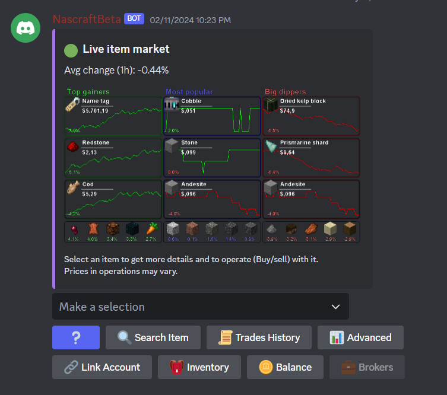
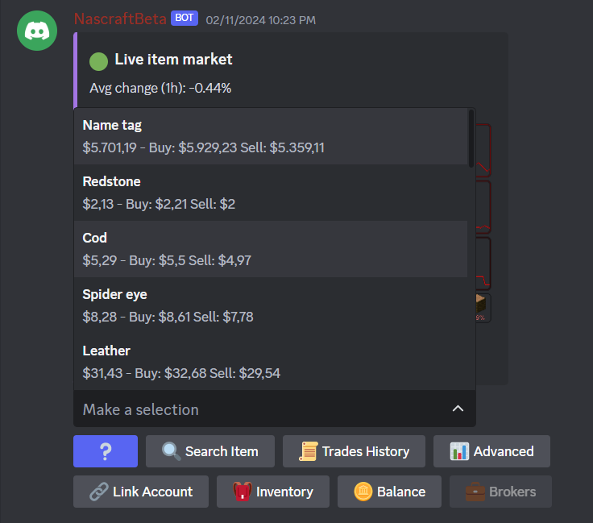
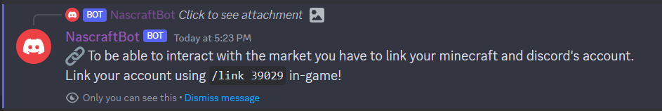

Discord 扩展：功能
主菜单
你可以指定一个专门给市场用的频道。玩家可以在里面查看价格变化，已绑定账号的玩家还能远程交易。
机器人会在该频道发一条带按钮的主菜单消息，并且每分钟更新一次。
⚠ 重要：这个频道应该设置为谁都不能发言，否则会被玩家的消息打断。机器人也会定期清理消息。

选择物品
玩家可以从「涨幅榜（Top gainers）」「最热门（Most populars）」「跌幅榜（Big dippers）」里挑选物品：

如果想要的物品不在列表里，可以点「🔎 搜索物品」按钮，输入物品标识符或别名：

交易历史
点「📜 交易历史」可以看到自己在游戏内和 Discord 上的全部交易记录：

账号绑定
大部分功能需要把 Discord 账号和游戏账号绑定。Nascraft 支持两种方式：
- 内置系统：机器人在 Discord 里给出一串验证码（例如
39029），玩家在游戏内执行/link 39029完成绑定。 点「🔗 绑定账号」按钮可以查看当前绑定的游戏 ID，也可以随时解绑。

- DiscordSRV：如果服务器装了 DiscordSRV，可以直接沿用它的绑定关系。
背包与余额
点对应按钮即可查看自己的余额和「虚拟背包」（在 Discord 上买入的物品会先放在这里，进游戏后可以取出）。